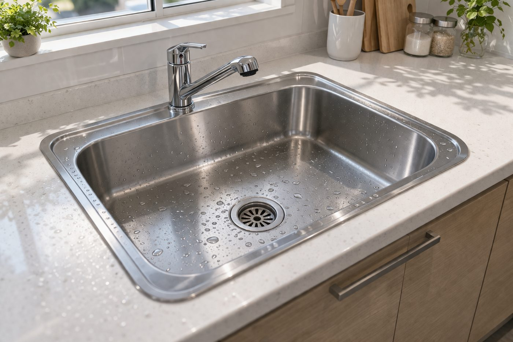

排水管のつまり・悪臭の原因
排水管のトラブルの大半は、毎日の生活で少しずつ流れ込む汚れが配管の内側にこびりつき、時間をかけて蓄積することで起こります。 場所によって溜まりやすい汚れの種類が異なります。
- キッチン： 調理で出る油や食材カスが冷えて固まり、配管の内壁にこびりつきます。
- お風呂・洗面： 髪の毛と石けんカス・皮脂が絡み合い、ヘドロ状のかたまりになります。
- 洗濯まわり： 衣類の繊維くずや洗剤カスが少しずつ溜まっていきます。
これらが配管内で層になって付着すると水の通り道が狭くなり、つまりや悪臭の原因になります。悪臭は、溜まった汚れが配管の中で腐敗・発酵して発生するケースが多く、表面を拭くだけでは根本的に解決しません。飲食店や店舗の厨房では汚れの量が多く、住宅よりも早いペースで蓄積が進みます。

こんなサインは要注意（流れが悪い・ゴポゴポ音・悪臭）
完全につまる前に、排水管は必ず「前ぶれ」のサインを出します。 次のような症状が出たら、配管の奥で汚れが溜まり始めているサインです。
- 水の流れが遅い： シンクや浴室の排水口に水がたまりやすく、なかなか引かない。
- ゴポゴポ音がする： 排水時に空気が押し戻されるような音がする（配管が狭くなっているサイン）。
- 悪臭がする： 排水口から下水のようなにおいが上がってくる。
- 逆流の気配： 水を流すと別の排水口から水が上がってくる。
これらのサインを感じたら、早めに対処するほど作業も簡単で済みます。完全につまってから慌てるより、流れが悪い段階での点検・洗浄がおすすめです。
市販パイプクリーナーの限界
市販のパイプクリーナーは「排水口の入口付近の軽い汚れ」には有効ですが、配管の奥で固まったつまりには届きにくいのが実情です。 薬剤は流し込んでから時間が経つと水で薄まってしまい、奥のかたまりに作用する前に流れていってしまいます。
また、つまりが進んで水がほとんど流れない状態だと、薬剤を入れても排水口にとどまってしまい、かえって扱いにくくなることもあります。固まった油や髪の毛のかたまりが原因の場合、薬剤だけで完全に解消するのは難しく、物理的に汚れを剥がして押し流す作業が必要になります。「市販品を何度試しても改善しない」場合は、配管の奥に原因があると考えてよいでしょう。
放置するとどうなる？逆流・水漏れリスク
「まだ少しは流れるから」と放置すると、汚れはさらに蓄積し、トラブルが一気に大きくなります。 主なリスクは次のとおりです。
- 逆流： 完全につまると行き場を失った水が逆流し、シンクや床に汚水があふれ出すことがあります。
- 水漏れ： 配管内の圧力が高まり、継ぎ目から水が漏れて床下や階下に被害が及ぶおそれがあります。
- 悪臭・害虫： 溜まった汚れが腐敗してにおいを発し、害虫が寄りつく原因にもなります。
特にマンションや店舗では、自宅の排水トラブルが階下や近隣に影響することもあります。被害が広がる前に、早めの対処が結果的に費用も手間もおさえられます。
プロの高圧洗浄とは
プロの高圧洗浄は、専用機材で強い水圧をかけ、配管の奥にこびりついた汚れを内壁から剥がして一気に洗い流す方法です。 薬剤では届かない奥のつまりにも対応でき、配管そのものをリセットするイメージで汚れを除去します。
キレイシアでは、つまりの原因や配管の状態を確認したうえで作業方法を決めます。表面の汚れを落とすだけでなく、配管の内壁に付着した油やヘドロまで洗い流すことで、つまりの解消と同時に悪臭の元も取り除きます。住宅の台所・浴室・洗面はもちろん、大阪市内の飲食店・店舗の厨房排水にも対応しています。
定期メンテナンスのすすめ
排水管の汚れは毎日少しずつ溜まるため、つまってから対処するより「定期的に洗浄して溜めない」方が結果的に手間も費用もおさえられます。 一度きれいにしても、使い続ければまた汚れは蓄積していきます。
特に油汚れの多い飲食店の厨房や、家族の多いご家庭では、汚れが溜まるペースが速くなります。定期的な高圧洗浄を取り入れておくと、急なつまりによる営業停止や生活トラブルを未然に防げます。日常的には、油を直接流さない・排水口に髪の毛キャッチャーを使うといったひと工夫も、つまりの予防に効果的です。
料金とお見積りについて
排水管洗浄は、配管の長さ・本数・つまり具合によって作業内容が大きく変わるため、一律料金ではなく「お見積り」で対応しています。 同じ排水のトラブルでも、軽い汚れの洗浄と、奥で固まった頑固なつまりの解消では作業の手間が異なるためです。
キレイシアでは、現地で配管の状況を確認したうえで料金をご提示し、ご納得いただいてから作業に入ります。見積もり提示後の追加料金は原則ありません。料金の考え方や他のサービスとあわせたご相談は、サービス一覧ページもしくはお見積りでご確認ください。お見積り・ご相談は無料です。
対応エリア
キレイシアは大阪市城東区を拠点に、東成区・中央区など大阪市内全域、東大阪市をはじめとする近隣エリアに対応しています。 戸建て・マンションのご家庭の排水はもちろん、飲食店・店舗の厨房まわりの排水トラブルにも対応可能です。大阪・京都・兵庫・奈良エリアもお気軽にご相談ください。「流れが悪い」「においが気になる」段階での点検だけでも歓迎です。